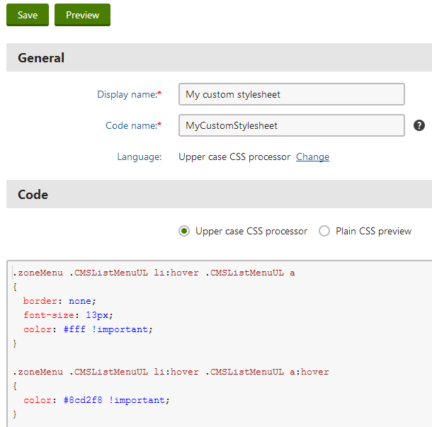

Registering CSS preprocessors
CSS preprocessors allow you to:
Integrate dynamic stylesheet languages, such as LESS, Sass or Stylus (you can then write CSS code that is shorter and easier to maintain)
Perform custom processing of CSS code (for example validation, or other automatic adjustments)
You can use the API to register any number of CSS preprocessors, and choose a language (preprocessor) for individual CSS stylesheets managed by the CSS stylesheets application. The system then stores two versions of the code for each stylesheet. You work with the unprocessed code in the editing interface, but browsers always recieve the plain CSS version when rendering pages.
Registering server-side CSS processors
You need to register your CSS preprocessors at the beginning of the application's life cycle. Create a custom module class and perform the registration during the initialization of the module (override the OnInit method of the module class).
Use the CssStylesheetInfoProvider.RegisterCssPreprocessor method to add preprocessors into the system. For server-side CSS processing, call the method with the following parameters:
Name (string) - a unique identifier of the preprocessor.
Extension (string) - the file extension of the stylesheets that use the given preprocessor (language). Used when deploying stylesheets as physical files.
Display name (string) - a name that appears when selecting the language for stylesheets in the administration interface.
Callback method that handles the processing of the CSS code.
When writing the callback method, either use the API of an external CSS preprocessor library, or implement your own custom logic. The callback must return a string containing plain CSS code.
The callback method provides a CSSEventArgs parameter with the following string properties:
Code - the stylesheet's original code, which the preprocessor needs to convert into plain CSS.
ErrorMessage - allows you to set a message that the system displays in the stylesheet editing interface if an error occurs while processing the CSS.
Example
The following example registers a sample processor that converts the final CSS code of stylesheets into upper case.
Open your project in Visual Studio.
Create a custom module class.
Either add the class into a custom project within the Kentico solution (recommended) or directly into the Kentico web project (into the CMSApp project for web application installations, into the App_Code folder for web site installations).
For basic execution of initialization code, you only need to register a "code-only" module through the API. You do NOT need to create a new module within the Modules application in the Kentico administration interface.
Override the module's OnInit method and call the RegisterCssPreprocessor method.
Implement the callback method that handles the server-side CSS processing (ParseCss in the example).
Save the module class file (Build the solution on web application installations).
using System;using CMS;using CMS.Base;using CMS.DataEngine;using CMS.PortalEngine;// Registers the custom module into the system[assembly: RegisterModule(typeof(CustomCSSProcessorModule))]public class CustomCSSProcessorModule : Module{ // Module class constructor, the system registers the module under the name "CustomCSSPreprocessor" public CustomCSSProcessorModule() : base("CustomCSSPreprocessor") { } // Contains initialization code that is executed when the application starts protected override void OnInit() { base.OnInit(); // Registers the 'Upper case CSS processor' CssStylesheetInfoProvider.RegisterCssPreprocessor("customCss", ".css", "Upper case CSS processor", ParseCss); } // Callback method that defines the processor's functionality private string ParseCss(CssEventArgs parsingArguments) { string cssOutput = String.Empty; try { // Call the API of your preprocessor or implement custom processing logic // The example only converts the final CSS code into upper case cssOutput = parsingArguments.Code.ToUpperCSafe(); } catch (Exception e) { // Sets a message that the stylesheet editing UI displays if an error occurs during the CSS processing parsingArguments.ErrorMessage = e.Message; } // Returns the plain CSS output of the processor return cssOutput; }}Assigning CSS processors to stylesheets
Once you register one or more CSS preprocessors, you can create stylesheets that use the added functionality. See Designing websites using CSS for general information about managing stylesheets stored in Kentico.
Log in to the Kentico administration interface.
Open the CSS stylesheets application.
Add a New CSS stylesheet.
Select the Language. The available options include all registered CSS preprocessors (display names) and Plain CSS.
Write the stylesheet code. You can use any syntax supported by the selected preprocessor.
Click Save.
When you save the stylesheet, the selected preprocessor generates the plain CSS equivalent of the actual code. The system stores both types of code for the stylesheet.
You work with the unprocessed code in the editing interface (for example the code of a dynamic stylesheet language)
Browsers always receive the plain CSS version when rendering pages that use the stylesheet
Tip: To preview the plain CSS output of a stylesheet's code, select the Plain CSS preview radio button above the editor.

Editing a stylesheet that uses a custom preprocessor (language)
Changing the language of stylesheets
If you have multiple CSS processors registered in the system, you can switch stylesheets to a different language:
Warning: When you change a stylesheet's language, the system permanently converts the code to plain CSS.
Edit the stylesheet.
Click Change next to the Language field.
Select the new language (preprocessor).
Click Change language.
The original processor converts the stylesheet's code to plain CSS. You need to manually adjust the code according to the new language.
Implementing client-side CSS processing
The system allows you to add CSS processing that runs directly in client browsers. For example, you can integrate dynamic stylesheet languages with client-side compilers.
To register a client-side CSS preprocessor, use the same basic approach as for server-side processing. Call the CssStylesheetInfoProvider.RegisterCssPreprocessor method with additional callback method parameters:
The first extra callback (Action delegate) renders the required scripts on the CSS stylesheet editing page. The client scripts must always define a GetCss method that converts stylesheet code into plain CSS.
The second callback detects errors in the client-side CSS processing. Use the callback to check the result of the GetCss client script method, and set an error message if necessary. The CSS processing finishes only if this callback returns an empty string.
Even when using a client-side preprocessor, we strongly recommend implementing equivalent functionality on the server. The server-side logic serves as a backup for scenarios where client-side processing is not possible (for example when using the API to update stylesheet code or during content staging).
The system performs the processing in the following order:
Processing via the GetCss client script method
If the result of GetCss is empty, the preprocessor runs the server-side callback
Example
The following example creates a client-side preprocessor that converts the final CSS code of stylesheets to lower case.
Prepare a JavaScript file that defines the GetCss method. For example, create cssclientside.js in the ~/CMSScripts/Custom folder.
cssclientside.js// Returns processed CSS code as a string, or an error message (starting with 'error|')// If the result is empty, the preprocessor runs the server-side callback methodfunctionGetCss(originalCode){varreturnCode;try{// Implement your client-side processing of the CSS code// The example only coverts the code to lower casereturnCode = originalCode.toLowerCase();}catch(ex){// Returns an error message in the format recognizable by the 'DetectClientSideErrors' callback methodreturnCode ='error|'+ ex.message;}returnreturnCode;}Register the CSS preprocessor and define the required callback methods. See Registering server-side CSS processors for information about the basic process.
using System;using System.Web.UI;using CMS;using CMS.Base;using CMS.Base.Web.UI;using CMS.DataEngine;using CMS.PortalEngine;using CMS.Helpers;// Registers the custom module into the system[assembly: RegisterModule(typeof(CustomClientCSSProcessorModule))]publicclassCustomClientCSSProcessorModule : Module{// Module class constructor, the system registers the module under the name "CustomClientCSSPreprocessor"publicCustomClientCSSProcessorModule(): base("CustomClientCSSPreprocessor"){}// Contains initialization code that is executed when the application startsprotectedoverridevoidOnInit(){base.OnInit();// Registers the 'Client-side CSS processor'CssStylesheetInfoProvider.RegisterCssPreprocessor("customClientCss",".css","Client-side CSS processor",ServerParseCss, RegisterClientScripts, DetectClientSideErrors);}// Registers JavaScript code and files required for client-side processingprivatestaticvoidRegisterClientScripts(){Page page = PageContext.CurrentPage;// Links 'cssclientside.js' onto the editing page for stylesheets using the "Client-side CSS processor" language// The client script must always define the 'GetCss' methodScriptHelper.RegisterClientScriptInclude(page, typeof(string),"ProcessCss", URLHelper.ResolveUrl("~/CMSScripts/Custom/cssclientside.js"));}// Called whenever client-side CSS processing occurs// Checks if the 'GetCss' JavaScript method returned an error.// The system completes the CSS processing only if the method's return value is an empty stringprivatestaticstring DetectClientSideErrors(string getCssOutput){// Detects errors in the client-side CSS processingif(getCssOutput.StartsWithCSafe("error|",true)){// Returns the error message result of the 'GetCss' JavaScript method// The system displays the error message in the CSS editing user interfacestring[] errorParts = getCssOutput.Split(new[] {'|'});returnerrorParts[1];}// Returns an empty string if the client-side processing was successful// In this case, the system uses the output of the 'GetCss' JavaScript method as the result of the CSS processingreturnString.Empty;}// Callback method that defines server-side processing// Used if the 'GetCss' JavaScript method returns an empty valueprivatestring ServerParseCss(CssEventArgs parsingArguments){// Converts the CSS code to lower casereturnparsingArguments.Code.ToLowerCSafe();}}
You can now assign the preprocessor to a stylesheet and try out the functionality.